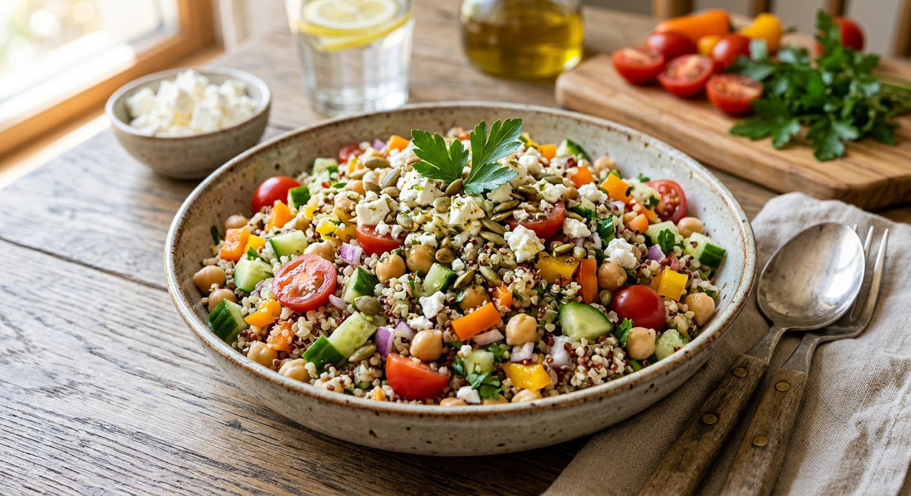

Lemony Quinoa Chickpea Salad

This salad is filling, fresh and travels well, which makes it a favorite for lunch prep and potlucks. Fluffy quinoa and chickpeas give it protein and fiber, and crisp cucumber, juicy tomatoes and herbs keep it light.
A lemony dressing ties everything together, and the flavor improves as it sits.
Ingredients
Salad
- 1 cup quinoa, rinsed
- 2 cups water
- 1 can (15 oz) chickpeas, drained and rinsed
- 1 large cucumber, diced
- 1 cup cherry tomatoes, halved
- 1/2 red onion, finely diced
- 1/2 cup chopped fresh parsley
- 1/2 cup crumbled feta (optional)
Dressing
- 1/4 cup olive oil
- 3 tbsp fresh lemon juice
- 1 clove garlic, minced
- 1 tsp Dijon mustard
- 1/2 tsp salt
- Black pepper, to taste
Instructions
- Combine the quinoa and water in a saucepan. Bring to a boil, cover, reduce the heat and simmer for 15 minutes. Remove from the heat and let stand covered for 5 minutes, then fluff with a fork and cool.
- Whisk the dressing ingredients together in a small bowl.
- In a large bowl, combine the cooled quinoa, chickpeas, cucumber, tomatoes, onion and parsley.
- Pour over the dressing and toss. Fold in the feta. Taste and adjust the seasoning.
Ingredient Notes and Substitutions
Quinoa
Rinse it well to remove the natural coating, which can taste bitter.
Chickpeas
Rinse canned chickpeas to reduce excess salt. Or cook dried ones.
Tips for Success
- Cool the quinoa before mixing so the vegetables stay crisp.
- Dress the salad shortly before serving, or add extra lemon juice if it sits overnight.
- Salt generously. Grains need seasoning.
Variations
- Add avocado, olives or roasted red peppers.
- Swap the parsley for mint or dill.
Storage and Make-Ahead
Refrigerate in an airtight container for up to 4 days. Stir and refresh with a squeeze of lemon before serving. Add the feta and avocado just before eating.
Frequently Asked Questions
Can I make it vegan?
Yes. Leave out the feta.
Is it good for meal prep?
Yes, it keeps well for several days.
Can I use another grain?
Couscous, farro or brown rice all work.